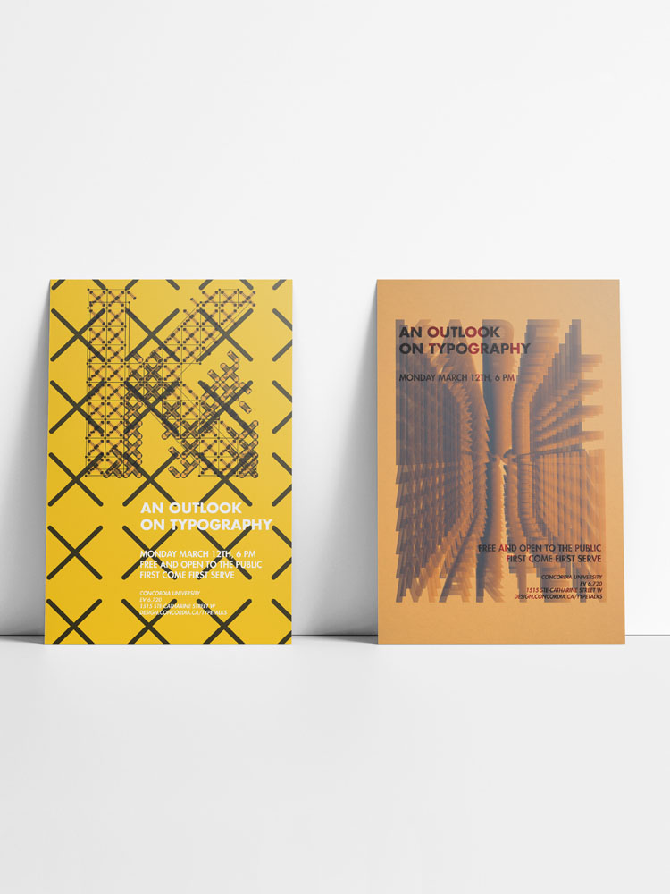
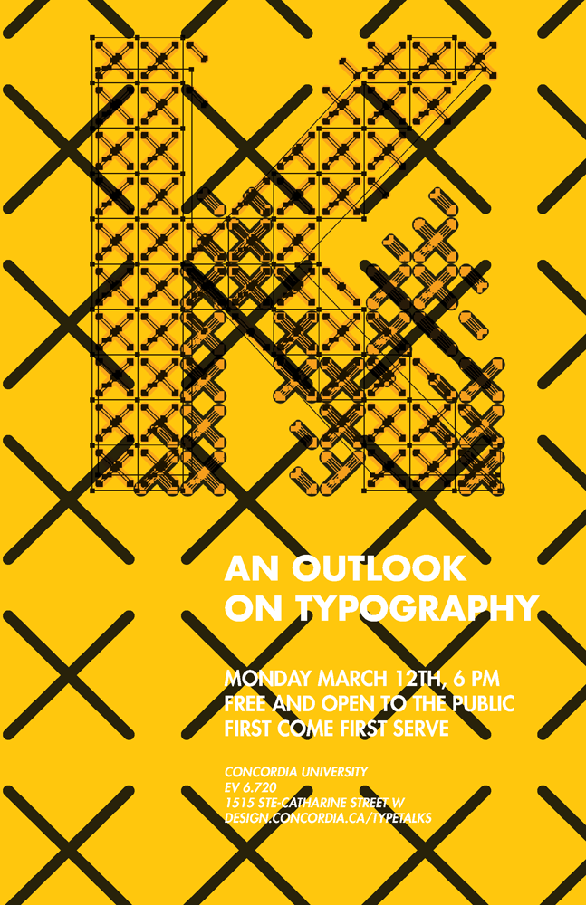
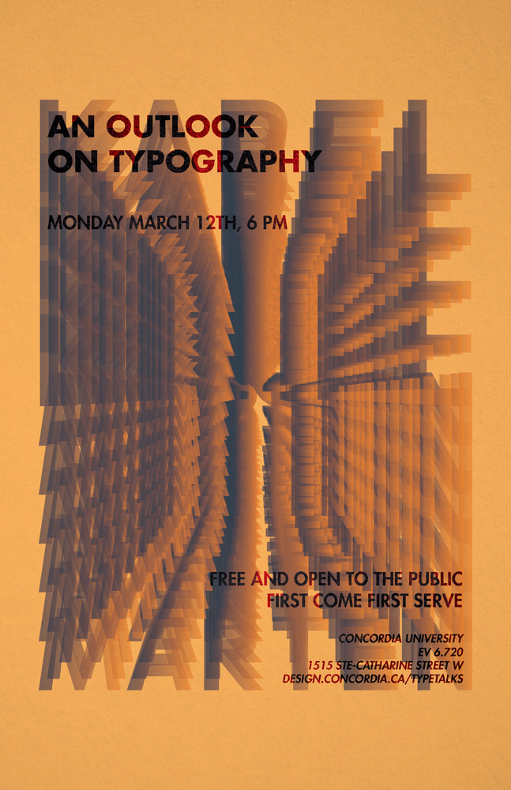
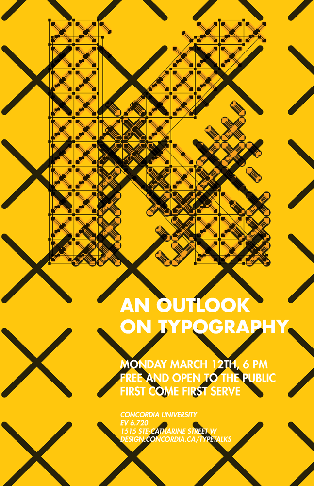
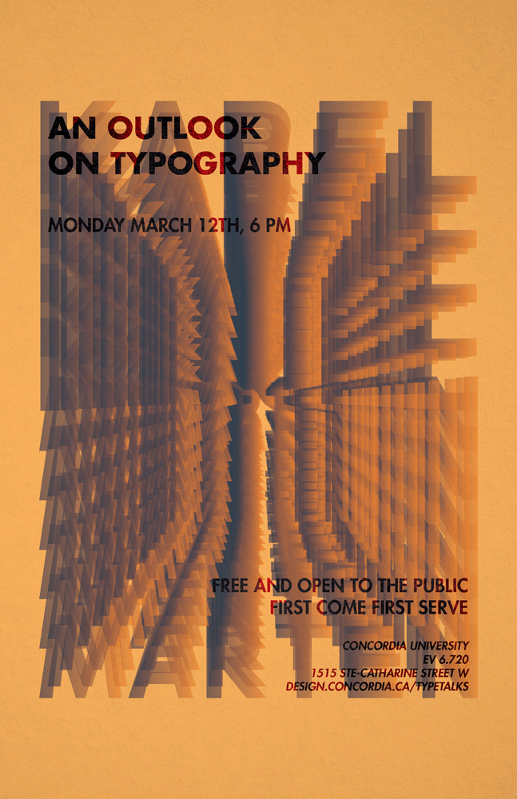
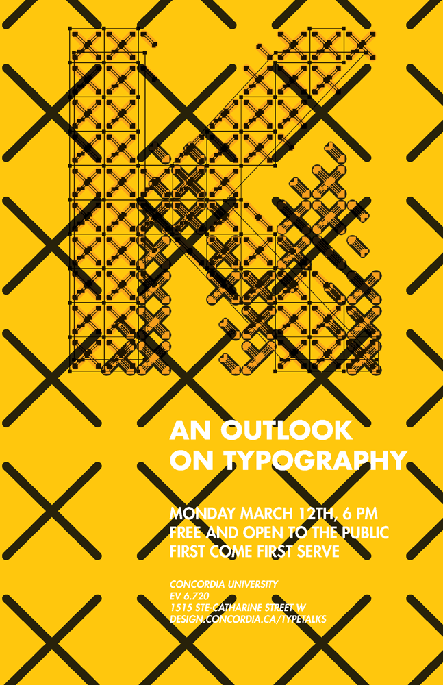
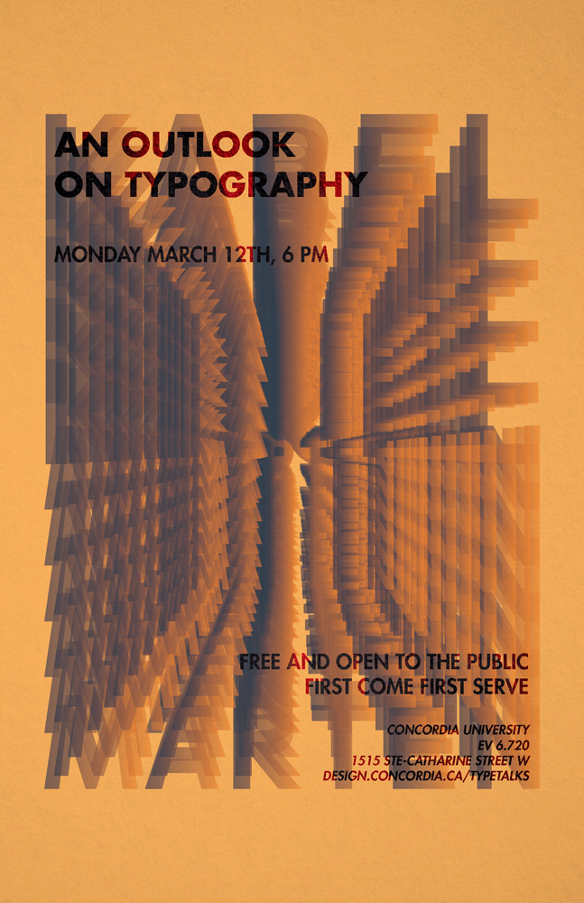

An outlook on typography was a series of event posters meant to advertise fictional lecture by the esteemed typographer and designer Karel Martens. Naturally, the developed pieces were meant to pay homage to Martens’ incredibly unique style. His works are diverse in nature, so naturally the series of posters covered mimicked his assorted techniques.
Working digitally, I was able to play on the metaphysical nature of his prints. Where he would show print borders and elements of his process in his final works, I integrated elements of my digital work environment as part of the final piece.

 





